Before writing any LLM code, the authors list every tool the book will lean on and say why each one was picked, so later chapters don't keep stopping to explain setup. First the Python ecosystem: pyenv pins the exact Python (3.11.8), Poetry builds an isolated virtual environment and locks every dependency, and Poe the Poet turns long commands into short named tasks. Then the MLOps / LLMOps tools: Hugging Face as the model registry, ZenML as the orchestrator that also versions every step's output as an artifact with metadata, Comet ML to track training experiments and Opik to monitor prompt traces. Then the two databases: MongoDB for raw crawled documents and Qdrant for vectors. Finally AWS: an IAM user, access keys, the CLI, a cost warning, and why SageMaker beats Bedrock (too hidden) and EKS/ECS (too much work) for a book about engineering.
The chapter is a tour of a stack, layer by layer. Each layer answers a problem the layer below cannot. Orange boxes are the tools the book picks; grey boxes are the problems they solve.
This chapter is a setup chapter. It lists every essential tool that the rest of the book uses to build and deploy the LLM Twin (the AI that writes like you, from Chapter 1). The authors say clearly what it is not: it is not the place for deep explanations of LLMs, RAG (retrieval-augmented generation), MLOps (operations practices for machine-learning systems) or LLMOps (the same, specialised for LLM apps). Those come later. The goal here is simple: explain the tech stack and its prerequisites once, so later chapters don't keep repeating "how to install X and why we chose it".
The real work starts in Chapter 3, with a data collection ETL (extract–transform–load job) that crawls data from the internet.
The chapter moves through four parts:
LLM-Engineers-Handbook, on your laptop. Plates 02–04.Two practical notes. If you already know these tools, the authors say you can skip the chapter. And the repo's README has a shorter install guide, so if you plan to run the code while reading, you can use that as the concise version. By the end you should know every tool in the book, how to install the repo, and how to set up and use the rest.
Before a long cooking session, a good cook gets everything ready: gas cylinder checked, masala dabba filled, knives sharpened, pressure-cooker gasket fitted. Nothing is cooked yet, but every later step goes faster because nobody stops mid-recipe to find the jeera. Where it breaks: kitchen tools rarely change; software tools change versions every few months, which is exactly why this chapter pins versions so carefully.
An ML system is mostly not model code (Chapter 1's point). It is environments, pipelines, storage, tracking and cloud accounts. Each needs a decision ("which tool?") and a reason ("why this one?"). Collecting the decisions in one place gives the rest of the book a shared vocabulary: when Chapter 4 says "push to Qdrant" or a training chapter says "check the Comet run", you already know what those are.
"What's your ML / LLM stack and why?" Answer by layer, each with a reason: "Python pinned with pyenv and Poetry for reproducible installs; an orchestrator like ZenML so every pipeline run is versioned; an experiment tracker for training and a tracing tool for prompts; a document store for raw data and a vector DB for retrieval; managed GPU compute in the cloud." Interviewers care more about the why per layer than the brand names.
According to the authors, every Python project needs three basic tools:
All the book's code is tested with Python 3.11.8. You can download Python from python.org, but the authors recommend installing that exact version through pyenv, which makes it simple.
pyenv is a Python version manager. Instead of installing several Python versions globally (where they fight over which python your terminal runs), pyenv keeps them side by side and lets each project choose its own. The basic flow:
pyenv install 3.11.8 # download + build this exact version
pyenv versions # list installed versions; "*" marks the active one
# * system
# 3.11.8
pyenv global 3.11.8 # (optional) default in every new terminalBut the authors don't want 3.11.8 everywhere; they want it only inside the repo. So you clone the repo and step into it:
git clone https://github.com/PacktPublishing/LLM-Engineers-Handbook.git
cd LLM-Engineers-Handbook
python --version # → Python 3.11.8 (picked up automatically)Why does this work? The repo contains a small file called .python-version. Whenever you're inside that folder, pyenv reads it and uses the version written there. The file is created by running pyenv local 3.11.8 once in the folder; after that, pyenv always knows which Python to use in that directory.
Pick a folder. pyenv looks for a .python-version file in the current folder and its parents; if none is found it falls back to the global setting. (Folders and the 3.9.18 project are modelled.)
A railway station where each platform has its own fixed train. Stand on platform 3 (the repo folder) and you always get the 3.11.8 express; on platform 1 you get the station's default. The .python-version file is the platform board. Where it breaks: at a station you walk; with pyenv you just cd, and the switch happens silently, which can surprise you if you forget the file is there.
pyenv puts small "shim" programs named python, pip and so on at the front of your PATH. When you type python, the shim runs first, checks for a .python-version file (current folder, then parents), then the global setting, and hands the command to the matching real interpreter. Pinning even the patch number (3.11.8) removes one more source of "it works for the authors but not for me". (The shim detail is beyond the book.)
"How do you make a Python service reproducible across laptops and CI?" Say: "Pin the interpreter (pyenv's .python-version, or the base image tag in Docker), pin every dependency with a lock file, and run commands through one task runner. Then the only things that vary are data and config." The same discipline applies to any backend service.
Poetry is one of the most popular dependency and virtual environment managers in Python. First, what is a dependency manager? It is a tool that lets you specify, install, update and manage the external libraries (packages, or dependencies) that your project relies on.
The book shows a tiny Poetry requirements file: a project that needs Python 3.11 plus the requests and numpy packages, and a [build-system] block that tells Python tools to build the project with poetry-core. Here is the same shape with a different package so you can see each part:
[tool.poetry.dependencies]
python = "^3.11" # which interpreter versions are allowed
httpx = "^0.27.0" # a library + an allowed version range
pandas = "^2.2.0"
[build-system] # how tools should build/install this project
requires = ["poetry-core"]
build-backend = "poetry.core.masonry.api"Poetry keeps these requirements in a file called pyproject.toml at the root of the repository (you can see it in the cloned repo). Pinning your dependencies there means you always install versions your project is known to work with.
Poetry also creates a new virtual environment and installs the chosen Python version and requirements into it. A virtual environment isolates your project's packages from the global Python packages and from other projects, so versions never clash.
The book's example: Project A needs numpy == 1.19.5 and Project B needs numpy == 1.26.0. If both live in the global environment, installing B overwrites A's numpy, which breaks A. With Poetry, each project gets its own environment with its own numpy, so nothing clashes. Try it:
The book uses Poetry 1.8.3 (install it from python-poetry.org). Inside the cloned repo, one command installs everything:
poetry install --without aws # all deps except the optional "aws" group
poetry shell # activate the env in this terminal, or…
poetry run <your command> # …prefix single commands insteadpoetry install reads both pyproject.toml and poetry.lock. --without aws skips the dependency group the repo marks as "aws" (cloud-only packages you don't need yet). After installing, you either activate the environment with poetry shell or put poetry run in front of each command.
In Poetry 2.0 (released after the book), poetry shell moved out of the core into a plugin; poetry env activate or poetry run are the built-in options now. The book's commands are for Poetry 1.8.3.
Poetry writes the exact versions of the whole dependency tree into poetry.lock, based on what pyproject.toml declares (the book's text calls it "project.toml" once; it means pyproject.toml). The difference:
pyproject.toml may allow a range, e.g. requests = "^2.25.1".poetry.lock records the one version that was actually installed, e.g. requests = "2.25.1".Because every package and sub-package is fixed, every install of the project gets the same versions. That gives predictable behaviour and fewer "works on my machine" problems.
Your pyproject.toml says requests = "^2.25.1". A teammate installs the project later, after newer versions were published. (Release history is modelled; caret meaning is Poetry's documented rule: same major version, at least the stated one.)
| Tool | What the book says |
|---|---|
| venv, Conda | Create virtual environments, but no dependency management: you fall back to a plain requirements.txt, which is less powerful than a lock file. |
| Pipenv | Feature-wise close to Poetry, but slower. |
| uv | A Poetry replacement written in Rust, so very fast. The authors think it has a lot of potential to replace Poetry and is worth testing. |
A requirements.txt with langchain>=0.2 installs whatever is newest that day, plus whatever sub-packages that version pulls. Two installs a month apart can differ in dozens of sub-packages. You could pin them all by hand with pip freeze, but then nobody can tell which pins you chose on purpose and which are incidental. Poetry keeps both: your intent (ranges, in pyproject.toml) and the exact result (in poetry.lock).
pyproject.toml is your mother's shopping note: "Basmati rice, any good brand, 5 kg". poetry.lock is the kirana bill from last time: "India Gate Classic, 5 kg, batch 2311". Hand the bill, not the note, to whoever shops next, and the biryani tastes the same. The virtual environment is giving each household its own rice bin so one family's brand doesn't get poured into another's. Where it breaks: shops run out of a batch; package indexes keep old versions available, so the lock file almost always works.
Poetry runs a resolver: it finds one set of versions that satisfies every range of every package at once, then writes that solution (with file hashes) to the lock file. A virtual environment is just a folder with its own site-packages and a python that looks there first, so two projects' numpy copies live in different folders and never see each other.
"Lock file vs requirements file?" Say: "The manifest states intent as ranges; the lock file records the exact resolved tree, including transitive dependencies, so every machine and CI run installs identical versions. Commit both. Upgrade deliberately with an update command and review the lock diff." For a production LLM gateway, an unplanned minor bump of an SDK is a classic outage cause.
pyproject.toml. Dependency pinning for training jobs: Ch.5.The third basic tool is a task execution tool. The book uses Poe the Poet, a plugin on top of Poetry that defines and runs all the CLI commands you need to work with the project. It simplifies automation and running scripts.
Common alternatives are a Makefile, Invoke or plain shell scripts. Poe's advantage: you don't need separate scripts or Makefiles, because tasks live in the same pyproject.toml that Poetry already uses for dependencies.
So instead of documenting commands in a README (where they go stale), you write them as named tasks and run them by alias. The book's example defines tasks for testing, formatting and starting the app; here is the same idea with our own names:
[tool.poe.tasks]
lint = "ruff check ." # alias → real command
serve = "uvicorn app.main:api"
crawl = "python -m tools.run --run-etl"poetry poe lint # runs: ruff check .
poetry poe serve
poetry poe crawlInstall Poe as a Poetry plugin with:
poetry self add 'poethepoet[poetry_plugin]'The authors' conclusion: a façade (a simple front) over all your CLI commands is needed to run the app. It greatly simplifies the project and helps collaboration, because the task list is documentation that runs.
The full install, assuming pyenv and Poetry are already installed:
git clone https://github.com/PacktPublishing/LLM-Engineers-Handbook.git
cd LLM-Engineers-Handbook
poetry install --without aws
poetry self add 'poethepoet[poetry_plugin]'To be fully working, a few more steps remain, such as filling a .env file with your credentials and getting tokens from OpenAI and Hugging Face. The book is not an installation guide, so those details live in the repo's README; they matter only if you plan to run the code.
Speed-dial on an old phone: press 2 for home, 3 for the office. You don't memorise numbers; you remember "2 = home". poetry poe local-infrastructure-up is speed-dial for a long Docker command. Where it breaks: speed-dial hides the number; Poe tasks are still readable in pyproject.toml, so anyone can see what "2" actually dials.
Poe reads the [tool.poe.tasks] table and runs each task inside the project's Poetry environment, so the right Python and packages are always used. Tasks can also chain other tasks, which is how the repo builds bigger commands from smaller ones in later chapters.
"How do you onboard a new engineer in a day?" A strong answer: "One clone, one install command, one .env template, and a task runner listing every operation: start infra, run pipelines, run tests. The task list is the runbook." Mention Make/Invoke/Poe as interchangeable; the point is a single entry point.
This section is a quick tour of every MLOps and LLMOps tool in the book and the role each plays in building ML systems with good practices. The authors are explicit about the scope:
If you already know these tools, you can skip ahead to the databases section (plate 14).
Using Docker, you can run all the infrastructure on your laptop:
.env file with the credentials the README asks for.poetry poe local-infrastructure-up. This starts ZenML (dashboard at http://127.0.0.1:8237/) plus the MongoDB and Qdrant databases.More details on local running are in the repo README, and the book later shows how to deploy each component to the cloud.
Ports for MongoDB and Qdrant aren't given in this chapter, so they're not shown.
A wedding caterer who arrives with a whole kitchen in one truck: gas stoves, utensils, cold storage. Park the truck, open the doors, and the kitchen is running. Docker images are the packed truck; local-infrastructure-up is "open the doors". Where it breaks: the truck version is a scaled-down kitchen; production uses the cloud versions of ZenML, MongoDB and Qdrant shown later in the book.
Docker runs each database as an isolated container from a published image, so you don't install MongoDB or Qdrant on your machine directly. The ZenML server is a Python package installed by poetry install; locally it is a debugging server with a web dashboard. One task wraps all of it so the start-up order and settings are the same for everyone.
"How do engineers develop against your infra locally?" Say: "A single command brings up local containers of every stateful dependency (document DB, vector DB, orchestrator UI), configured from a .env file. Code talks to them through settings, so the same code points at managed cloud services in production."
A model registry is a central repository that manages ML models through their whole lifecycle. It stores each model together with its metadata, version history and performance metrics, and acts as the single source of truth for "which model is which".
Why it matters in MLOps:
The book uses Hugging Face as its model registry, for two reasons:
The fine-tuned models published by the authors:
huggingface.co/mlabonne/TwinLlama-3.1-8Bhuggingface.co/mlabonne/TwinLlama-3.1-8B-DPOFor a quick demo, both also run on Hugging Face Spaces (small hosted demo apps) at huggingface.co/spaces/mlabonne/TwinLlama-3.1-8B and …/TwinLlama-3.1-8B-DPO. (The PDF's text renders the names as "TwinLlama 31 8B"; the URLs show the real names.)
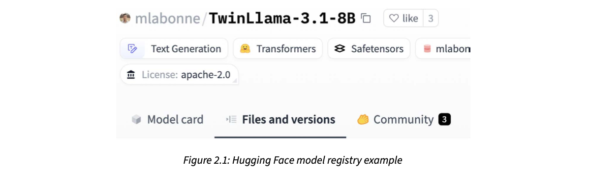
How to read this figure. The top line is the model's identity: owner mlabonne / model TwinLlama-3.1-8B, with a like counter (3). Below are tags that act as metadata: the task (Text Generation), the library (Transformers), the weight file format (Safetensors), a dataset/collection tag starting "mlabon…", and the License: apache-2.0. The three tabs are the registry's functions: Model card (documentation), Files and versions (selected; every file is git-versioned, so you can pin a commit) and Community (3 discussions).
Other registries. Most ML tools have registry features: ZenML, Comet and SageMaker (all covered later) each offer one, and they're good options. The authors picked Hugging Face only for its ecosystem: easy sharing and integration across open source. The general rule: choose the registry that fits best with your project's tools and requirements.
Apply the book's rule ("integrates most with your tooling and requirements") to a few situations. Scenarios are our own.
A model registry is like the record room of a district court: every judgment (model) has a case number (version), the full file (weights + config), and a summary sheet (model card). Anyone who needs judgment no. 2024/117 gets exactly that one. Hugging Face is a public record room anyone can visit. Where it breaks: court records never change; model "files" can get new commits, which is why you pin a revision when deploying.
A Hugging Face model repo is a git repository (with large files stored separately). Each push is a commit, so "version" means a commit hash or a tag. Libraries such as Transformers know how to download a repo by name and revision, and that shared naming convention is what makes integration with fine-tuning and serving tools easy.
"Why have a model registry if you can store weights in S3?" Say: "S3 stores bytes; a registry adds identity and lifecycle: versions, metadata, metrics, lineage and stage (staging/production), and it's what CI/CD deploys from. That gives rollback and an audit trail." Then add the book's point: pick the registry your stack integrates with best.
The book describes ZenML as the bridge between ML and MLOps. It offers several MLOps features that make your pipelines easier to trace, reproduce, deploy and maintain. At its core it is built to create reproducible ML workflows.
The problem it targets: moving from exploratory research in Jupyter notebooks to a production-ready ML setup. Specifically, the replication problems of production:
So ZenML's main features are: orchestrating ML pipelines, storing and versioning pipeline outputs, and attaching metadata to artifacts for better observability.
Instead of being "yet another ML platform", ZenML introduces the stack: a named bundle of infrastructure that ZenML runs on. A stack connects ZenML to cloud services such as:
ZenML is the glue that brings your infrastructure and tools together in one place, so you can iterate fast and monitor the whole ML system. Its big benefit: no vendor lock-in. It fully separates your Python code from the infrastructure it runs on. For the LLM Twin, the authors used the AWS stack: SageMaker as orchestrator and compute, S3 as remote storage for artifacts, ECR as container registry. Yet the Python code contains nothing specific to S3 or ECR; ZenML handles those. So switching to, say, Google Cloud Storage or Azure is easy.
The book only uses a few ZenML features (orchestration, artifacts and metadata) and points to ZenML's starter guide for more. The local ZenML server ships as a Python package, so poetry install already gives you a local debugging server. Chapter 11 shows ZenML's cloud serverless option for deploying the pipelines to AWS.
A phone charger with swappable plug heads: Indian, UK, US. The charger (your code) is the same; you clip on the head for the country (the stack) you're in. Where it breaks: some cloud-specific features (like a special GPU instance type) still need settings per stack; the plug analogy makes it sound more free than it is.
Each stack component is an adapter behind a common interface: "store this artifact", "run this step in a container", "push this image". Your steps only call ZenML's interface; the active stack decides which adapter implements it. It's the classic ports-and-adapters (hexagonal) idea applied to ML infrastructure.
"How do you avoid cloud lock-in for ML pipelines?" Say: "Keep business logic free of cloud SDK calls and put an abstraction layer between code and infra: an orchestrator with pluggable backends, like ZenML stacks (orchestrator, artifact store, container registry). Switching clouds becomes a config change, not a rewrite."
An orchestrator is a system that automates, schedules and coordinates all your ML pipelines. It makes sure each pipeline (data ingestion, preprocessing, model training, deployment…) runs in the right order and that dependencies between tasks are handled well. By managing these processes it:
so complex ML pipelines become more reliable and easier to manage.
How ZenML orchestrates. It works with pipelines and steps. A pipeline is a high-level object containing several steps. A plain Python function becomes a pipeline when decorated with @pipeline, and a step when decorated with @step. This is a standard pattern across orchestrators: a top-level function (the pipeline) calls several units (steps, or tasks).
The book's example is a real LLM Twin pipeline, digital_data_etl: it looks up a user by full name in the database (creating them if missing) and then crawls every link given for that user. The shape, in our own words:
from zenml import pipeline
from steps.etl import find_or_add_author, crawl_urls # steps live elsewhere
@pipeline
def author_content_etl(author_name: str, urls: list[str]) -> None:
author = find_or_add_author(author_name) # step 1
crawl_urls(author=author, urls=urls) # step 2 uses step 1's output@pipeline turns the function into something ZenML can run, track and show in the dashboard.author from step 1 into step 2 is how ZenML learns the order (a dependency edge).You run it with the Poe task poetry poe run-digital-data-etl. Then open the ZenML dashboard at http://127.0.0.1:8237/, click Pipelines on the left, then digital_data_etl.
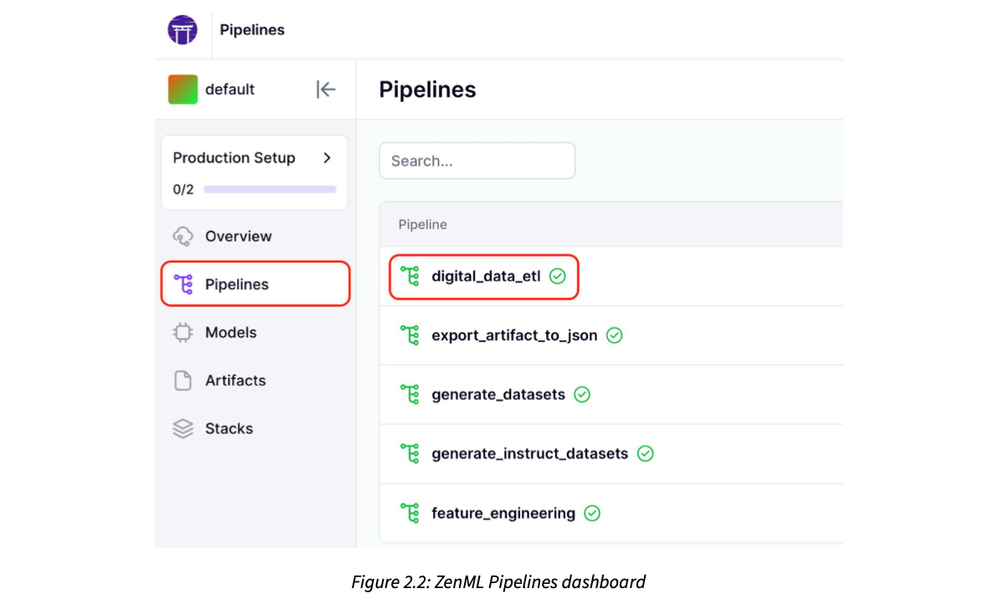
How to read this figure. The left menu shows the default workspace with a "Production Setup 0/2" checklist and the sections Overview, Pipelines, Models, Artifacts, Stacks; Pipelines is circled in red. The main list shows the LLM Twin's pipelines: digital_data_etl (circled), export_artifact_to_json, generate_datasets, generate_instruct_datasets and feature_engineering, each with a green tick for its last run.
Clicking the pipeline shows all its past and current runs: which succeeded, failed or are still running, and the stack each one used. The default stack is the one that runs pipelines locally.
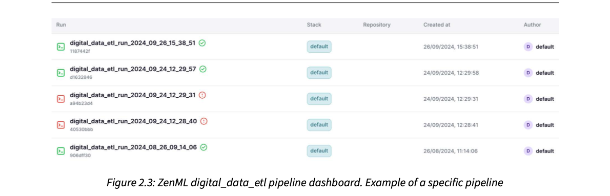
How to read this figure. Each row is one run, named digital_data_etl_run_ + a timestamp (the run-name pattern set in plate 11), with a short ID under it. Green ticks are successes; the two red ! rows (24/09/2024 at 12:28 and 12:29) are failed runs, followed a minute later by a successful one, which is what debugging looks like. Columns: Stack (all default), Repository (empty), Created at, Author (default).
Clicking the latest (or any successful or running) run shows its steps, outputs and insights. This structure is a DAG (directed acyclic graph: boxes connected by one-way arrows with no loops). DAGs are covered more in Chapter 11.
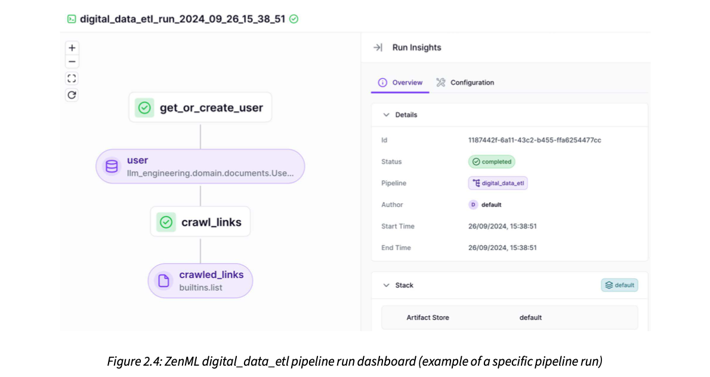
How to read this figure. Left, the DAG top to bottom: step get_or_create_user (white box, green tick) → its output artifact user (purple pill, type llm_engineering.domain.documents.UserDocument) → step crawl_links → output artifact crawled_links (type builtins.list). White boxes are steps; purple pills are artifacts (plate 10). Right, Run Insights: the run's ID, Status completed, the pipeline, author, start and end time (both 15:38:51, a very short run), and a Stack section showing the default artifact store.
Clicking a step shows its code and configuration, and even collects the logs that step printed, so you don't need to switch to another tool to read them.
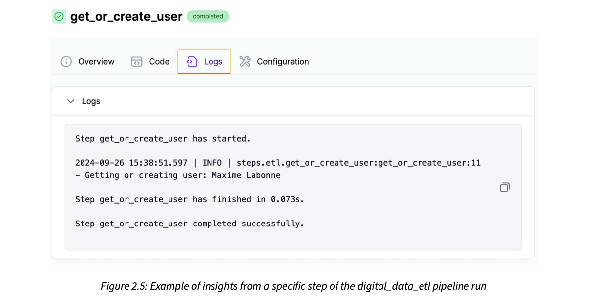
How to read this figure. The step get_or_create_user is marked completed. Tabs: Overview, Code, Logs (selected), Configuration. The log shows the step starting, one INFO line from the step's own logger ("Getting or creating user: Maxime Labonne", with file and line number), then "finished in 0.073s" and "completed successfully".
A Mumbai dabbawala network. Each dabba passes through fixed hand-offs (home → station → sorting → office) in a fixed order, the coding on the lid tells every handler where it goes next, and if one train is late the system knows exactly which dabbas are stuck. The orchestrator is the coding system; steps are the hand-offs; the DAG is the route map. Where it breaks: dabbawalas don't keep a copy of every lunch; ZenML stores every step output as an artifact, so you can inspect or reuse it later.
When the pipeline function is called, ZenML doesn't run steps immediately; it records which step outputs feed which step inputs and builds the DAG. Then it runs steps in dependency order (in parallel where possible), saves each output, records status, timing and logs, and stops downstream steps if an upstream one fails. Because outputs are saved, a re-run can cache unchanged steps (which is why the book later passes --no-cache to force fresh crawling).
"What does an orchestrator give you over cron + scripts?" Say: "Dependency-ordered execution as a DAG, retries and failure handling, per-run history with logs, versioned outputs and caching, and resource scheduling. Cron just starts a process at a time." Name examples: ZenML, Airflow, Prefect, Dagster.
A ZenML step works like a normal Python function, just decorated with @step. The book shows the get_or_create_user() step (the ETL logic itself is Chapter 3's topic). The idea, with our own names:
from typing_extensions import Annotated
from zenml import step
from loguru import logger
from my_app.domain import AuthorDoc # domain model from the app package
from my_app import helpers
@step
def find_or_add_author(full_name: str) -> Annotated[AuthorDoc, "author"]:
logger.info(f"Looking up author: {full_name}")
first, last = helpers.split_name(full_name)
return AuthorDoc.get_or_create(first_name=first, last_name=last)@step makes the function a unit ZenML can run, log and track.Annotated[AuthorDoc, "author"] gives the output both a type and a name; the name is what you see as the artifact label in the dashboard (like user in Figure 2.4).split_name, get_or_create).Inside a step you can put any Python logic: here it just fetches or creates a user, but it could be data collection, feature engineering or training.
To use ZenML well, your code must be modular: each function does one thing. Then it's easy to decorate functions with @step and glue them in a @pipeline. A key design choice is the granularity of each step, because in the cloud each step runs as a separate unit on a different machine. Too fine and you pay start-up and data-transfer overhead per step; too coarse and you lose visibility and caching.
To decouple the code from ZenML, the authors put all application and domain logic into the llm_engineering Python module. ZenML code lives in two separate folders:
steps: each step imports only what it needs from llm_engineering (like using any Python package).pipelines: only glues steps into final pipelines.With this design you can swap ZenML for another orchestrator, or reuse the app logic somewhere else, such as a REST API, by replacing only the ZenML code. llm_engineering, where all the logic lives, stays untouched.
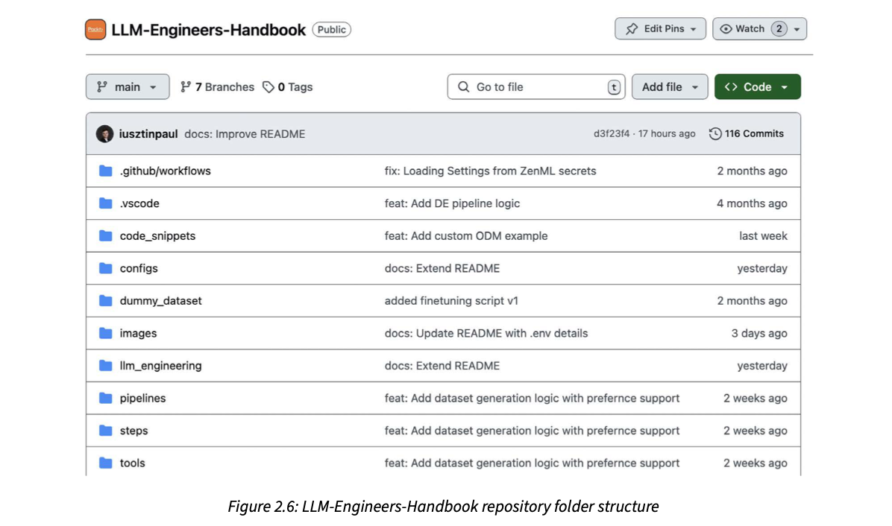
How to read this figure. The public GitHub repo (branch main, 7 branches, 0 tags, 116 commits at the time). The root folders are .github/workflows (CI), .vscode, code_snippets, configs (pipeline YAMLs, plate 11), dummy_dataset, images, and the three that matter here: llm_engineering (all app/domain logic), pipelines and steps (the ZenML layer), plus tools (where run.py lives). The middle column is each folder's last commit message.
If a step returns a value, that value must be serializable (convertible to bytes that can be saved and loaded), because ZenML turns every output into a stored artifact. ZenML handles most objects that reduce to primitive types, with some exceptions. The authors used UUID types as IDs across the code, and ZenML didn't support them natively, so they extended ZenML's materializer (the component that saves/loads a type) to handle UUIDs. They reported it to ZenML, and future versions were to support UUIDs, but it's a good example of how function outputs become artifacts.
A restaurant kitchen (the llm_engineering module) and two ways to serve: a dine-in waiter (ZenML pipelines) and a Swiggy counter (a REST API). The recipes don't change when you add delivery; only the counter does. And every dish sent out must fit a standard box (serializable): a dish that doesn't fit needs a custom box (a materializer). Where it breaks: kitchens don't care which machine cooks each dish; in the cloud each step may run on a different machine, which is why step size matters.
Between steps, data doesn't stay in memory: step A's output is written to the artifact store by a materializer, and step B (maybe on another machine) reads it back. That's why outputs must be serializable, and why each step boundary has a cost. The upside is that every intermediate result is saved and inspectable.
"How do you structure ML pipeline code so it's testable and portable?" Say: "Pure domain logic in a package with no orchestrator imports; thin step wrappers that call it; pipelines that only wire steps. Steps return serializable types. Then the same logic serves a batch pipeline, a REST endpoint or a unit test." This is the same layering as hexagonal architecture in backend services.
ZenML turns every step output into an artifact. In MLOps, an artifact is any file (or files) produced during the ML lifecycle: datasets, trained models, checkpoints, logs. Artifacts are essential for reproducing experiments and deploying models. Anything can be made into an artifact; a model registry, for example, is just a special use of artifacts.
Artifacts have three special properties:
Back to the digital_data_etl example: the crawled links are a step output, so they're an artifact.
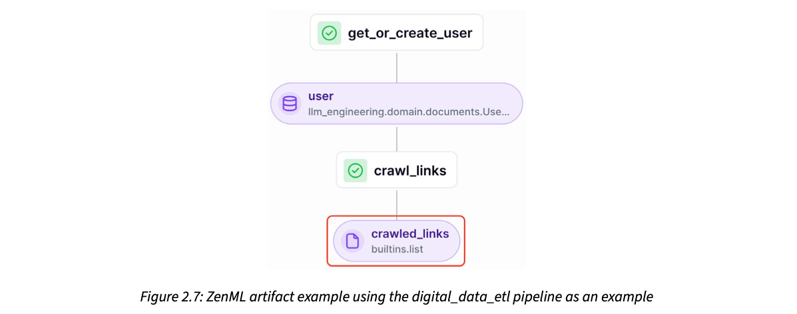
How to read this figure. The same DAG as Figure 2.4, with the final purple pill crawled_links (builtins.list) boxed in red: that pill is the artifact. The other pill, user, is an artifact too. Every step's output becomes one.
Click crawled_links and open the Metadata tab: it shows every domain crawled for that author, how many links were crawled per domain, and how many succeeded.
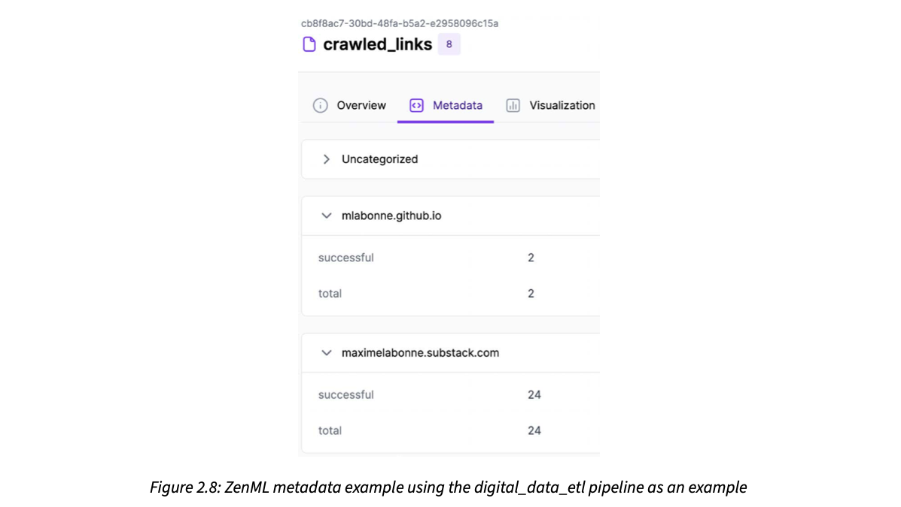
How to read this figure. At the top, the artifact's UUID and name crawled_links with a version badge 8 (the eighth version). Tabs: Overview, Metadata, Visualization. Groups: Uncategorized (collapsed), mlabonne.github.io with successful 2 / total 2, and maximelabonne.substack.com with successful 24 / total 24. So this run crawled 26 links, all successfully, and you learn that without opening the data.
A more interesting case is the generated dataset artifact instruct_datasets, created automatically and later used to fine-tune the LLM Twin (instruction datasets are Chapter 5's topic). Its metadata was precomputed: how many data categories it has, its storage size, and how many samples are in each training and test split.
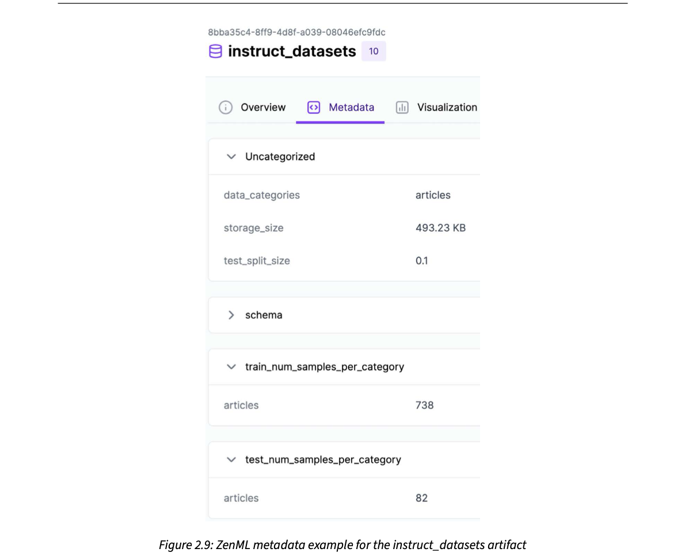
How to read this figure. Artifact instruct_datasets, version 10, with its UUID (8bba35c4-…, the same one used in the loading snippet below). Uncategorized: data_categories = articles, storage_size = 493.23 KB, test_split_size = 0.1. A collapsed schema group. train_num_samples_per_category: articles 738. test_num_samples_per_category: articles 82. Check: 82 / (738 + 82) = 82 / 820 = 0.1, matching the split size.
The metadata is added by hand in the step code, so you can precompute anything that helps people discover datasets across projects. The book's step names its output artifact, tags it, and attaches a dictionary of statistics. Our condensed version of the same pattern:
from zenml import ArtifactConfig, get_step_context, step
@step
def build_qa_dataset(prompts) -> Annotated[
QASplit, ArtifactConfig(name="qa_datasets", tags=["dataset", "qa"])]:
splits = make_splits(prompts) # the real work
get_step_context().add_output_metadata(
output_name="qa_datasets", metadata=summarise(splits))
return splits
def summarise(splits: QASplit) -> dict:
return {
"categories": list(splits.train.keys()),
"test_fraction": splits.test_fraction,
"train_count": {c: d.num_samples for c, d in splits.train.items()},
"test_count": {c: d.num_samples for c, d in splits.test.items()},
}ArtifactConfig(name=…, tags=…) fixes the artifact's name and adds tags (the book uses "dataset", "instruct", "cleaned") so it's easy to search for.get_step_context() gives access to the running step; add_output_metadata attaches the dictionary to the named output.generate_intruction_dataset, a typo for "instruction" in the original.)You can also download any specific version of an artifact by its UUID (universally unique identifier), found in the dashboard or CLI:
from zenml.client import Client
art = Client().get_artifact_version("<artifact-version-uuid>")
data = art.load() # the Python object, rebuilt by its materializerAdjust a modelled dataset and see the metadata a step like the one above would attach. The defaults reproduce Figure 2.9's numbers.
Courier parcels with a printed label: sender, weight, contents ("2 books"), parcel number. The sorting office routes it without opening it. Metadata is the label; the UUID is the tracking number; versions are "this is the 10th parcel of this kind you've sent". Where it breaks: a courier label is printed by the sender in a standard format; ZenML metadata is whatever you choose to compute, so it's only as useful as the fields you add.
The artifact's bytes go to the artifact store (local disk, or S3 on the AWS stack), while its name, version, tags, type and metadata go into ZenML's metadata database on the server. The dashboard reads only the database, which is why you can browse counts and sizes without downloading the data. Linking each artifact to the run and step that made it gives lineage: for any model you can trace back which dataset version trained it.
Six weeks later the fine-tuned model behaves oddly. Its run points to instruct_datasets v10. You load v10 by UUID and see 738 train / 82 test, articles only. The latest version, v12, has posts too. Now you know the model was never trained on posts. Without versioned artifacts you'd only know "the dataset at the time".
"How do you make ML experiments reproducible?" Say: "Version every intermediate output as an artifact with metadata and lineage (which code, config and inputs produced it), load by immutable ID, and record the artifact IDs used by each training run. Then any model can be rebuilt or audited." In a RAG system the same applies to the chunked/embedded corpus snapshot behind an index.
instruct_datasets is generated: Ch.5. Chip Huyen on data lineage and versioning: AI Engineering ch.8.All ZenML pipelines are started from one file, tools/run.py, a small CLI where you choose which pipeline to run. For example, to run the ETL for Maxime's content:
python -m tools.run --run-etl --no-cache --etl-config-filename digital_data_etl_maxime_labonne.yamland for Paul's content, the same command with digital_data_etl_paul_iusztin.yaml. (--no-cache asks ZenML not to reuse cached step outputs, so the crawl really runs again.)
As promised with Poe the Poet, every project command goes through Poe, so these become:
poetry poe run-digital-data-etl-maxime
poetry poe run-digital-data-etl-paulOnly the config file name changes between people. ZenML lets you inject a configuration file at runtime. The book's run.py builds the config path, checks the file exists, gives the run a timestamped name, and calls the pipeline with those options. Our version of the idea:
cfg = project_root / "configs" / cfg_name
assert cfg.exists(), f"missing config: {cfg}"
stamp = datetime.now().strftime("%Y_%m_%d_%H_%M_%S")
author_content_etl.with_options(
config_path=cfg, run_name=f"author_content_etl_run_{stamp}")()with_options(config_path=…) tells ZenML to read the pipeline's parameters from YAML; the final () runs it.run_name is why runs in Figure 2.3 look like digital_data_etl_run_2024_09_26_15_38_51.The YAML lists every parameter the pipeline takes. The book's Maxime config sets user_full_name and a list of links (his personal blog posts and Substack articles, "… more links"). Shape with made-up values:
parameters:
author_name: Asha Rao # [first name(s)] [last name]
urls:
# personal blog
- https://asha.example.dev/posts/kv-cache
# newsletter
- https://asha.substack.example/p/rag-in-prodThe keys match the pipeline signature (in the book: digital_data_etl(user_full_name: str, links: list[str]); there it's shown returning str, earlier None). Benefits of this approach:
Each pipeline has one or more configs:
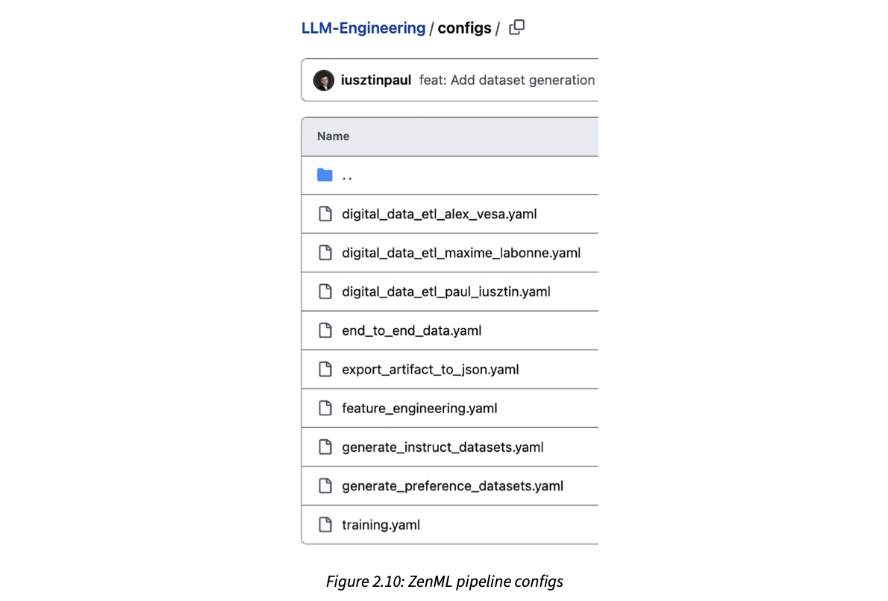
How to read this figure. The repo's configs/ folder. Three ETL configs, one per author: digital_data_etl_alex_vesa.yaml, …_maxime_labonne.yaml, …_paul_iusztin.yaml (same pipeline, different people). Then one config per other pipeline: end_to_end_data.yaml, export_artifact_to_json.yaml, feature_engineering.yaml, generate_instruct_datasets.yaml, generate_preference_datasets.yaml and training.yaml. The file names are effectively a map of the whole project's pipelines.
Commands and file names are the book's; the clock time in the run name is modelled.
Orchestrators the authors have tested and consider powerful: Airflow, Prefect, Metaflow and Dagster. Heavy Kubernetes users can choose Argo Workflows (printed as "Agro" in the book) or Kubeflow, which runs only on top of Kubernetes. The authors still think ZenML is the best trade-off between ease of use, features and cost, and none of the others offers ZenML's stack feature, which avoids locking you into one cloud. Chapter 11 goes deeper into using an orchestrator for MLOps best practices.
| Orchestrator | What the book says |
|---|---|
| ZenML | Chosen: best trade-off of ease, features, cost; unique stack feature (no vendor lock-in) |
| Airflow, Prefect, Metaflow, Dagster | Tested by the authors; powerful alternatives |
| Argo Workflows, Kubeflow | For heavy Kubernetes users; Kubeflow works only on Kubernetes |
A pressure cooker is the pipeline; the recipe card is the config. Same cooker for rajma or chana, you just swap the card (ingredients and whistles). And you keep every used card in a file, so you know exactly what went into last Sunday's batch. Where it breaks: a recipe card can't change the cooker; a config can't change pipeline code either, only its parameters, which is the point.
ZenML merges the YAML's parameters into the pipeline function's arguments, and stores the resolved configuration with the run. Because the config is a file in git and also saved per run, you can always answer "which inputs produced this artifact?"
"How do you parametrise batch jobs?" Say: "Code takes parameters; values live in versioned config files injected at runtime; each run records its resolved config and a unique run name. New tenant or dataset = new config, no code change." For a multi-tenant RAG ingestion job, one config per customer is exactly this pattern.
Training ML models is iterative and experimental. Unlike normal software development, you run many experiments in parallel, compare them on predefined metrics, and decide which one goes to production. An experiment tracker logs everything you need for that (metrics, visualisations of predictions and so on) so you can compare runs and pick the best model quickly. The LLM project is no exception.
The authors used Comet to track metrics such as training and evaluation loss and the gradient norm across all experiments.
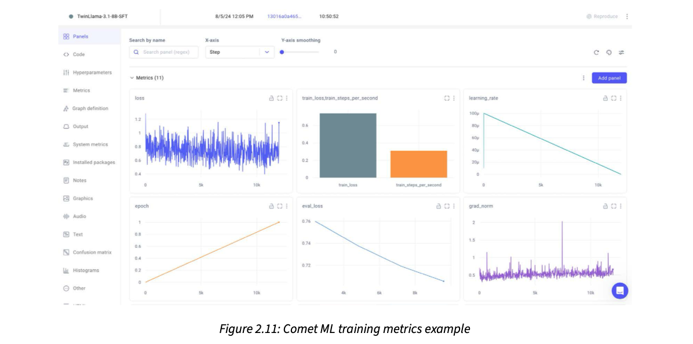
How to read this figure. The run is TwinLlama-3.1-8B-SFT (supervised fine-tuning). The left menu lists what Comet can store: Panels, Code, Hyperparameters, Metrics, Graph definition, Output, System metrics, Installed packages, Notes and more. "Metrics (11)" shows six panels, x-axis = training step: loss (noisy, roughly 0.5–1.1 over ~12k steps); a bar chart of train_loss (~0.7) vs train_steps_per_second (~0.3); learning_rate starting at about 100µ and falling in a straight line to 0 (a linear decay schedule); epoch rising linearly from 0 to 1 (one pass over the data); eval_loss falling smoothly from ~0.76 to ~0.71; and grad_norm mostly around 0.5 with one spike near 2. Smooth falling eval loss with noisy training loss is the healthy pattern.
A tracker goes beyond training and evaluation metrics: you can also log hyperparameters to compare configurations across experiments. It also logs system metrics out of the box (GPU, CPU, memory use), showing what resources training needs and where bottlenecks slow it down.
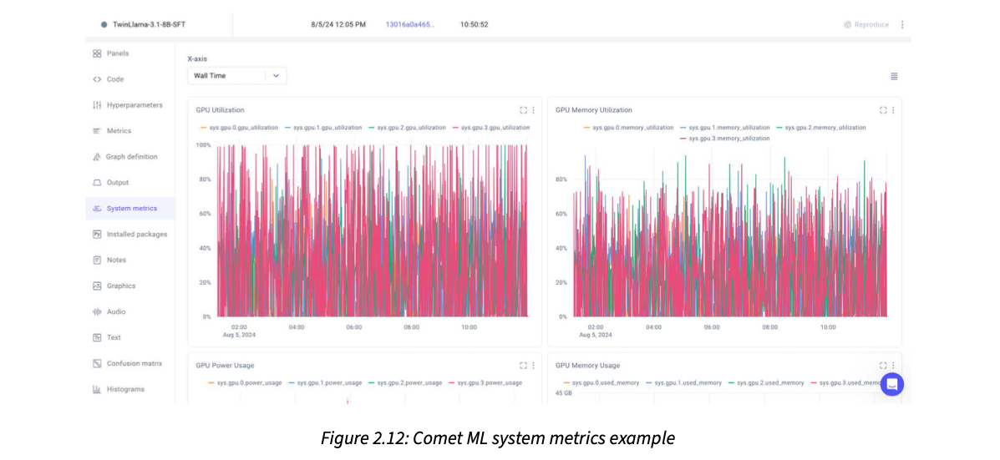
How to read this figure. Same run, System metrics tab, x-axis = wall time (about 02:00 to 11:00 on Aug 5, 2024, so roughly a nine-hour run). Four coloured series, sys.gpu.0 to sys.gpu.3: four GPUs. GPU Utilization jumps constantly between 0% and 100%, and GPU Memory Utilization swings mostly between ~20% and ~80%. Below, panels for GPU Power Usage and GPU Memory Usage (axis up to 45 GB) begin. Spiky utilisation like this hints that the GPUs sometimes wait (for data or communication), the kind of bottleneck these charts help you find.
You don't need to install Comet locally: the book uses its free online version without limits. The authors made their fine-tuning experiments public on Comet (project mlabonne/llm-twin-training) if you want to explore.
Alternatives: W&B (Weights & Biases), MLflow and Neptune. The authors have used them all and say they have mostly the same features; Comet stands out for its ease of use and intuitive interface.
Three modelled fine-tuning runs logged to a tracker. Choose the selection rule and see which run wins. This is the decision an experiment tracker exists to make easy.
A cricket team's analyst who records every net session: bowler, ball type, pitch, speed, line and length. When choosing the XI, the coach compares sessions on the same numbers instead of memory. Hyperparameters are the conditions; loss curves are the stats; system metrics are the fitness tracker. Where it breaks: net sessions are cheap; one LLM fine-tuning run can cost hours of multi-GPU time, so losing its record is far more expensive.
The training script calls the tracker's SDK (or a training library's built-in integration) every few steps to send metric values; a background thread also samples GPU/CPU stats. Everything is stored under one experiment ID with its hyperparameters, code and installed packages, so runs can be overlaid and compared on the same axes.
"How do you know a fine-tuning run is healthy?" Say: "Watch train and eval loss together (eval should fall, a widening gap means overfitting), the learning-rate schedule, gradient norm for spikes (instability), and GPU utilisation and memory for bottlenecks. Log hyperparameters so runs are comparable, and promote based on eval metrics, not train loss."
The last MLOps piece is prompt monitoring. The authors say you can't use standard logging and monitoring tools for prompts. The full reasoning comes in Chapter 11; the short version:
The book uses Opik, an open-source tool made by Comet, because it follows Comet's philosophy of simplicity and ease of use, which the authors call rare in the LLM landscape. Opik has a serverless option and also a free open-source version you fully control.
| Tool | Open source? | Book's view |
|---|---|---|
| Opik (Comet) | Yes (plus serverless) | Chosen: simple, easy to use |
| Langfuse | Yes | Similar features; more cumbersome to use and implement |
| Galileo | No | Similar features; more cumbersome |
| LangSmith | No | Similar features; more cumbersome |
One user question to an LLM Twin-style RAG app. Flat logs scatter these lines among thousands of others; a trace keeps them as one tree.
An IRCTC PNR status page. One PNR groups the whole journey: booking, waitlist movements, chart preparation, final berth. If a passenger complains, you open the PNR and see each event in order. Flat logs are like searching the whole railway's event stream for one passenger. Where it breaks: a PNR has a fixed shape; an LLM trace's tree changes with every request (more or fewer tool calls, retries).
A tracing tool gives each user request a trace ID and each sub-operation (LLM call, retrieval, tool call) a span with parent–child links, inputs, outputs, latency and token counts. Because later prompts include earlier outputs, debugging a bad answer means walking up the tree to find which step went wrong, which a tree view makes easy and grep makes hard.
"How do you monitor an LLM app in production?" Say: "Trace every request as a tree of spans (retrieval, each LLM call, tools) with full prompts, outputs, latency, tokens and cost, then add evaluations or feedback on top. Tools: Opik, Langfuse, LangSmith. Plain logs can't show how one prompt depended on the previous one." This maps directly to debugging a voice agent's multi-turn tool-calling flow.
The book uses two databases: one NoSQL and one vector. Locally both are already wired up through Docker: when you run poetry poe local-infrastructure-up (plate 05), Docker pulls and runs local images of both. For deployment, the book later uses their serverless (managed cloud) versions and connects them to the rest of the LLM Twin.
MongoDB is described as one of today's most popular, robust, fast and feature-rich NoSQL databases (databases that don't force a fixed table schema; MongoDB stores JSON-like documents). It integrates well with most clouds: AWS, Google Cloud, Azure and Databricks. So the authors call choosing it a "no-brainer".
When the book was written, MongoDB was used by big companies such as Novo Nordisk, Delivery Hero, Okta and Volvo. The authors read this wide adoption as a sign it will stay a leading NoSQL database for a long time.
Its job in the LLM Twin: store the raw data collected from the internet, before it's processed and pushed into the vector database. Because this is unstructured text, a flexible NoSQL store fits well: an article, a post and a code repo can all be stored without forcing them into one table shape.
Three crawled items (modelled). Each has different fields; a document store keeps them as they are.
Pick an item.
A big steel almirah where each family member keeps things in their own way: one has saris folded with tags, another has files in plastic folders. You can still find anything by owner. A SQL table is a medicine cabinet with fixed labelled slots. Where it breaks: flexibility has a price; if every document has a different shape, the code reading them must handle all shapes (the book later adds a typed model layer, called an ODM, to keep this in check).
MongoDB stores BSON documents (binary JSON) in collections, indexes chosen fields, and lets each document carry its own set of fields. That suits a crawler, where each source (Medium, Substack, LinkedIn, GitHub) returns different metadata. Here it plays the data warehouse role for raw data, which the feature pipeline later reads.
"Why a document DB for raw crawled data?" Say: "Sources have heterogeneous, evolving shapes; a document store accepts them without migrations, keeps raw data as the source of truth, and lets downstream pipelines re-process it when the chunking or embedding logic changes." The trade-off to mention: weaker cross-document constraints and joins than SQL.
Qdrant (qdrant.tech) is described as one of the most popular, robust and feature-rich vector databases (databases that store embeddings, lists of numbers representing meaning, and find the nearest ones quickly). The authors admit almost any vector DB would do for a small MVP, but they wanted something light and likely to be used in industry for many years.
Its job: store the data from MongoDB after it has been processed and transformed for GenAI use (cleaned, chunked, embedded), so the RAG system can search it.
Qdrant is used by X (formerly Twitter), Disney, Microsoft, Discord and Johnson & Johnson, so the authors expect it to stay around for a long time.
Alternatives popular when the book was written: Milvus, Redis, Weaviate, Pinecone, Chroma and pgvector (a PostgreSQL plugin for vector indexes). The authors found Qdrant gave the best trade-off between RPS (requests per second), latency and index time (how long building the index takes), making it a solid choice for many GenAI apps.
A full comparison "could be a chapter in itself", so they skip it and point to Superlinked's Vector DB Comparison, which compares the top vector DBs on everything from licence and release year to features, supported embedding models and frameworks.
Chunk counts, vector size and scores are modelled for illustration; the real feature pipeline is in Ch.4.
| MongoDB | Qdrant | |
|---|---|---|
| Type | NoSQL document DB | Vector DB |
| Holds | Raw crawled data (before processing) | Processed, GenAI-ready data (after the feature pipeline) |
| Why chosen | Popular, robust, integrates with every cloud | Light, popular, best RPS / latency / index-time trade-off |
| Named users | Novo Nordisk, Delivery Hero, Okta, Volvo | X, Disney, Microsoft, Discord, J&J |
| Local / cloud | Docker locally; serverless versions at deployment | |
A library. MongoDB is the stack room where every donated book is kept as received. Qdrant is the librarian's mental map: "books about monsoon farming are on this shelf, near the irrigation books". You ask by meaning, not by exact title. Where it breaks: a librarian understands; a vector DB only measures distance between numbers, so result quality depends on the embedding model and the chunking.
A vector DB stores each chunk's embedding plus a payload (the text and metadata such as author or source). It builds an approximate-nearest-neighbour index (HNSW graphs in Qdrant's case; beyond the book) so a query embedding finds the closest vectors in milliseconds instead of comparing against every vector. RPS, latency and index time are the three axes the book weighs.
"How would you choose a vector database?" Say: "Throughput (RPS) and p95 latency at my vector count and dimension, index build/update time, metadata filtering, hosting model (managed vs self-host), and whether I can just use pgvector in an existing Postgres. For a small MVP almost anything works; pick something light with a future." That's precisely the book's reasoning, and it applies directly to a RAG memory layer.
The last part of the chapter covers setting up an AWS account (if you don't have one), an AWS access key and the CLI, and then what SageMaker is and why the book uses it.
Why AWS? Because it is the most popular cloud and the one the authors have the most experience with. They are honest that GCP and Azure offer similar services; the real choice is always a trade-off between development time (what you know best), features and cost. For this MVP, AWS fits because it has solid services for everything needed:
The book's three-way trade-off. Move the weights for your own situation (scores are modelled, not the book's).
Choosing a bank for a new business current account. SBI, HDFC and ICICI all offer the same basics; you usually pick the one whose app and branch you already know, unless fees or a special feature push you elsewhere. Where it breaks: switching banks is a form and a week; switching clouds after you've built on their services is months, which is why ZenML's stack abstraction (plate 07) matters.
The three services map one-to-one onto ZenML stack components: S3 = artifact store, ECR = container registry, SageMaker = orchestrator/compute. The same Python pipeline code runs locally on the default stack and on AWS by switching stacks.
"Why did you pick that cloud?" A mature answer names the trade-off: "Team expertise and speed first, then whether it has managed services for each need (object storage, container registry, GPU training and serving), then cost. The big three are close on features, so I'd avoid lock-in in the code where it's cheap to do so."
Because AWS often changes its UI, the book doesn't describe screens; it points to AWS's official guides. The flow:
console.aws.amazon.com with "Sign in using root user email" (under the Sign in button), using the account's email and password.aws configure with the new keys..env.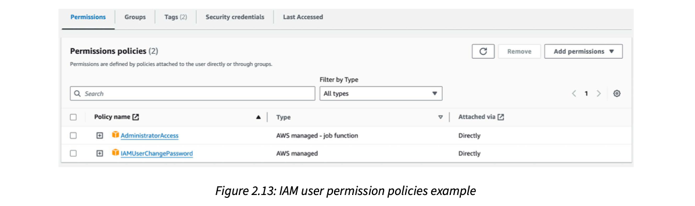
How to read this figure. The IAM user's Permissions tab (others: Groups, Tags (2), Security credentials, Last Accessed). "Permissions policies (2)": AdministratorAccess, type AWS managed – job function, and IAMUserChangePassword, type AWS managed (lets the user change their own console password). Both are Attached via: Directly (to the user, not through a group). Buttons on the right let you add or remove permissions.
An access key is a pair: an access key ID and a secret access key. Two warnings from the book:
aws configure asks for the key ID, secret, default region and output format, and saves them as a profile. The book's example uses the [default] profile, region eu-central-1 (Frankfurt) and json output. The resulting files look roughly like this (placeholders, not real keys):
# ~/.aws/credentials
[default]
aws_access_key_id = AKIA…EXAMPLE
aws_secret_access_key = ••••••••
# ~/.aws/config
[default]
region = eu-central-1
output = jsonThe project reads AWS settings from its .env file, with three variables: AWS_REGION (the book's default is eu-central-1; change it to yours), AWS_ACCESS_KEY and AWS_SECRET_KEY.
AWS_REGION="ap-south-1" # your region (book default: eu-central-1)
AWS_ACCESS_KEY="<your access key id>"
AWS_SECRET_KEY="<your secret access key>"In the AWS CLI, the default aws configure writes the keys to ~/.aws/credentials and region/output to ~/.aws/config; the book shows them together as one block. Also, many teams now prefer short-lived credentials (IAM Identity Center / SSO, or roles) over long-lived access keys; the book uses keys for simplicity on a test account.
The root account is the owner of a housing society with every key. An IAM user is a staff member with a key ring; AdministratorAccess gives the watchman a master key (fine while it's your own empty test flat, risky in a full building). The access key pair is like a UPI ID plus PIN: the ID can be seen, the PIN must stay secret and can't be shown again. Where it breaks: a stolen PIN costs one account's balance; a stolen admin key can spin up GPU machines that bill you thousands.
Every AWS API call is signed with the secret key; AWS checks the signature, finds the IAM user, then evaluates the attached policies to allow or deny the action. The CLI and SDKs (like boto3) look for credentials in a fixed order (environment variables, then the config files, then roles), which is why both aws configure and the .env variables work.
"How do you manage cloud credentials for an ML project?" Say: "Never use root for daily work; create IAM identities with least privilege per role or service; keep secrets out of git (a .env that's gitignored, or a secrets manager); prefer short-lived role credentials in production; rotate keys and alert on leaks." Mention the book's admin shortcut as acceptable only for a personal sandbox.
Every cloud service in the book stays within its free (freemium) tier, except AWS. So if you use a personal AWS account, you pay the AWS costs as you follow along. Some services may fall under the AWS Free Tier; others won't. You are responsible for checking your billing console regularly.
Most cost comes from testing SageMaker for training and inference. In the authors' tests, AWS costs ranged between $50 and $100 using the book's and repo's specifications. They point to AWS's guide on billing alarms (CloudWatch alerts on estimated charges) to monitor spend.
Prices below are illustrative placeholders, not current AWS prices and not from the book. The point is the shape: GPU hours dominate, and an endpoint you forget to delete keeps billing.
An auto-rickshaw with the meter running while you go inside a shop. Training is the ride you wanted; a forgotten SageMaker endpoint is the meter ticking while you shop. A billing alarm is a friend who calls when the meter crosses ₹500. Where it breaks: the rickshaw driver will eventually leave; AWS will happily keep the meter running for a month.
SageMaker training jobs bill per second of instance time while they run; real-time endpoints bill for every hour the instances exist, whether or not they get requests. Storage is cheap by comparison. CloudWatch billing alarms watch AWS's estimated-charges metric and notify you when it crosses a threshold.
"How do you control GPU cloud costs?" Say: "Budgets and billing alarms from day one, tag resources per project, autoscale or scale-to-zero endpoints, delete idle endpoints, use spot instances for fault-tolerant training, and track cost per experiment alongside its metrics." That last point ties the experiment tracker to the bill.
SageMaker is an ML platform for training and deploying ML models. AWS's own description, paraphrased: a fully managed ML service that lets developers and data scientists build, train and deploy models at scale, handling the underlying infrastructure so users can focus on building good models.
The book uses it for two things:
A fully serviced co-working space: you bring your laptop (model code), they provide desks, power, internet and cleaning (GPUs, networking, scaling). You also rent a reception desk (the endpoint) that answers visitors any time. Where it breaks: a co-working desk is cheap to keep; a reserved GPU "desk" is very expensive to leave empty.
A training job starts instances with your container, mounts the data, runs the script and saves the model, then shuts down. An endpoint keeps instances running behind an HTTPS API, loads the model into GPU memory, and routes requests to it. SageMaker handles provisioning, health checks and scaling policies; you choose instance types and code.
"How would you serve a fine-tuned 8B model?" Say: "Package it with an inference server on a GPU instance behind a managed endpoint (e.g. SageMaker real-time endpoint), autoscale on load, and watch latency and cost; or a serverless API if a base model is enough." Then explain the trade-off in the next plate.
The authors explain why they chose SageMaker over simpler, cheaper options such as Amazon Bedrock.
In short: Bedrock is an out-of-the-box way to get an API endpoint backed by one of the available foundation models; SageMaker is a multi-purpose platform where you control the ML logic fully.
Bedrock would be great for quick prototypes. But this is a book about LLM engineering, and the goal is to dig into the engineering that Bedrock hides. So they chose SageMaker for its customisability, which lets them show all the engineering needed to deploy a model.
Even SageMaker isn't fully customisable. For complete control, use EKS, AWS's managed Kubernetes service (the book calls it "self-managed"): you get direct access to the virtual machines and can fully customise how pipelines are built, how they interact and how resources are managed. The book says the same is possible with ECS, which it calls "AWS's version of Kubernetes". With EKS or ECS you could also reduce costs, as these services cost considerably less.
Small corrections: ECS (Elastic Container Service) is AWS's own container orchestrator, not Kubernetes; EKS is the Kubernetes service, where AWS manages the control plane and you manage worker nodes. Also, Bedrock's model list has grown a lot since the book (and it now supports some fine-tuning and importing custom models), but the core trade-off the book describes still holds.
Conclusion: SageMaker sits in the middle, between complete control and a fully managed service that hides the engineering. You get the control you need plus the convenience of a managed service.
Illustrative numbers only: per-call API at a flat modelled price per request; a dedicated endpoint at a modelled hourly rate that bills even when idle.
Three ways to get lunch at work. Bedrock is ordering from Swiggy: tap and eat, pay per order, but only from the menu. SageMaker is a rented, equipped kitchen: cook anything, but rent is due even on days you don't cook. EKS/ECS is building your own kitchen: cheapest per meal at scale and fully yours, but you install the gas line, plumbing and chimney. Where it breaks: food choice is personal taste; here the "menu" limit is concrete: you can't serve your own fine-tuned TwinLlama on a fixed model list.
The difference is who owns the idle capacity. A serverless API spreads idle GPUs across many customers and charges per call. A dedicated endpoint reserves GPUs for you, so you pay for every hour, busy or not, which is why autoscaling (including scaling down) is essential. Self-managed clusters remove the managed-service markup but add operations work.
With the default numbers above: 5,000 requests/day on a pay-per-call API is cheap, while a 24-hour endpoint costs the same whether you get 5 or 50,000 requests. Push requests to ~150,000/day and the per-call bill overtakes the endpoint. Low or spiky traffic favours per-call; steady high traffic, or a custom model, favours a dedicated endpoint.
"Managed LLM API or self-hosted model?" Say: "Managed API (Bedrock, OpenAI) for speed, low ops and spiky or low traffic, if the available models are good enough. Self-host (SageMaker endpoint, or Kubernetes for full control and lower unit cost) when you need a fine-tuned or custom model, data control, or steady high volume, and then you own autoscaling and idle cost." That's exactly the book's Bedrock → SageMaker → EKS ladder.
The book's own wrap-up, in plain words:
Next: Chapter 3 starts the implementation with the data collection ETL that scrapes posts, articles and repositories from the internet and stores them in a data warehouse (MongoDB).
| Term | Meaning (plain words) |
|---|---|
| pyenv | Python version manager; picks a version per folder via .python-version. |
| Virtual environment | A per-project folder of installed packages, isolated from other projects and the global Python. |
| Dependency manager | Tool to specify, install, update and manage the libraries a project uses. |
| pyproject.toml | Project file at the repo root holding Poetry's dependency ranges and Poe tasks. |
| poetry.lock | Exact versions of every dependency and sub-dependency; makes installs identical. |
| Poe the Poet | Poetry plugin that runs named tasks from pyproject.toml (poetry poe <task>). |
| Model registry | Central store of models with metadata, versions and metrics; single source of truth; feeds CI/CD. |
| Orchestrator | Automates, schedules and coordinates pipelines in the right order, handling dependencies and failures. |
| Pipeline / step | In ZenML: @pipeline function that wires @step functions together. |
| DAG | Directed acyclic graph: one-way arrows, no loops; the shape of a pipeline run. |
| Stack (ZenML) | Pluggable infrastructure bundle: orchestrator/compute, artifact store, container registry. |
| Artifact | Any file produced in the ML lifecycle; versioned, shareable, with metadata. |
| Metadata | Facts attached to an artifact (size, split, counts) so you understand it without downloading it. |
| Materializer | ZenML component that serializes/deserializes a step output type. |
| Experiment tracker | Logs metrics, hyperparameters and system stats per training run to compare experiments. |
| Prompt monitoring / trace | Recording chained prompts and outputs as one grouped trace for debugging LLM apps. |
| NoSQL / vector DB | Flexible document store for raw data / store for embeddings with fast similarity search. |
| IAM, access key | AWS identity and permissions; key ID + secret for programmatic access. |
| Least privilege | Give each identity only the permissions it needs. |
| SageMaker / Bedrock / EKS / ECS | Managed ML platform / serverless model API / managed Kubernetes / AWS container service. |
| Tool / company | Role in the chapter |
|---|---|
| pyenv · Poetry 1.8.3 · Poe the Poet | Interpreter pinning, dependency + venv management, task runner. |
| venv · Conda · Pipenv · uv | Alternatives to Poetry (no dep mgmt / slower / Rust-fast replacement). |
| Makefile · Invoke · shell scripts | Alternatives to Poe the Poet. |
| Docker 27.1.1+ | Runs ZenML, MongoDB and Qdrant locally with one Poe task. |
| Hugging Face (Hub, Spaces) | Model registry for TwinLlama-3.1-8B and -DPO; demo Spaces. |
| Unsloth | Fine-tuning framework that integrates with the Hugging Face model format. |
| ZenML | Orchestrator, artifacts, metadata, stacks; local server on 127.0.0.1:8237; cloud serverless in Ch.11. |
| Airflow · Prefect · Metaflow · Dagster · Argo Workflows · Kubeflow | Alternative orchestrators (last two for Kubernetes users). |
| Comet ML | Experiment tracker (free online); public LLM Twin training runs. |
| W&B · MLflow · Neptune | Alternative trackers with mostly the same features. |
| Opik (by Comet) | Open-source prompt monitoring / tracing. |
| Langfuse · Galileo · LangSmith | Alternative prompt monitoring tools (open / closed / closed). |
| MongoDB | NoSQL store for raw crawled data; used by Novo Nordisk, Delivery Hero, Okta, Volvo. |
| Qdrant | Vector DB for processed data; used by X, Disney, Microsoft, Discord, Johnson & Johnson. |
| Milvus · Redis · Weaviate · Pinecone · Chroma · pgvector | Alternative vector stores; Superlinked's Vector DB Comparison for details. |
| OpenAI | API token needed in .env to run the project. |
| AWS S3 · ECR · SageMaker | Artifact storage, container registry, GPU training + real-time endpoints. |
| AWS IAM · CLI · CloudWatch billing alarms | Identity/keys, programmatic access, cost monitoring. |
| Amazon Bedrock · EKS · ECS | Rejected alternatives: too managed / more control, cheaper, more work. |
| GCP (Vertex AI, GCS) · Azure · Databricks | Other clouds/platforms named as equivalents or integrations. |
The Python interpreter, dependency management, and a task execution tool. In the book: Python 3.11.8 via pyenv, Poetry, and Poe the Poet.
The repo has a .python-version file (created once with pyenv local 3.11.8). pyenv reads it whenever you're in that folder; elsewhere it falls back to the global version.
The exact installed version (e.g. 2.25.1) and the exact versions of all sub-dependencies, so every install is identical and "works on my machine" problems drop.
Installing B overwrites A's numpy, breaking A. Separate virtual environments (Poetry creates one per project) avoid this.
Only for its ecosystem: easy sharing of the TwinLlama models with readers and integration with open-source LLM tools (Unsloth, SageMaker). The general rule is to pick the registry that integrates best with your tooling.
A pluggable bundle of infrastructure ZenML runs on: orchestrator/compute, remote (artifact) storage, container registry. AWS stack: SageMaker, S3, ECR. The Python code has no S3/ECR specifics, so there's no vendor lock-in.
Each step runs as a separate unit, possibly on a different machine, so every step boundary adds start-up and data-transfer cost; too coarse loses visibility and reuse.
llm_engineering and keep ZenML code in steps/pipelines?To decouple app logic from the orchestrator: you could swap ZenML for another orchestrator, or reuse the logic in a REST API, by replacing only the ZenML layer.
Step outputs must be serializable to become artifacts, and UUIDs weren't natively supported. They extended ZenML's materializer to handle UUIDs (and reported it to ZenML).
Yes: 82 / (738 + 82) = 82 / 820 = 0.1.
Add a new YAML config (user name + links) in configs/ and run the ETL with --etl-config-filename pointing to it (wrapped in a Poe task). ZenML injects the parameters at runtime and records them with the run.
Prompts and outputs form chains (traces) where one prompt depends on earlier ones; plain text logs lose that structure. A specialised dashboard groups traces for debugging (Opik in the book).
MongoDB: raw data crawled from the internet (unstructured text, flexible schema). Qdrant: the same data after processing and transformation for GenAI use (embedded chunks for RAG).
The attacker could do anything in the account (e.g. launch costly resources). The book uses it only to simplify a test account; production should follow least privilege, and the secret must be stored safely and never shared.
Bedrock is serverless and priced per API call but limited to its pre-trained models and hides the engineering. The book needs to deploy a custom fine-tuned model and teach the engineering, so it uses SageMaker: customisable and managed, though you pay for idle endpoints and must autoscale. EKS/ECS would give full control and lower cost but more work.
The chapter's last page (pdf p83) is only an invitation to the book's Discord community (packt.link/llmeng).